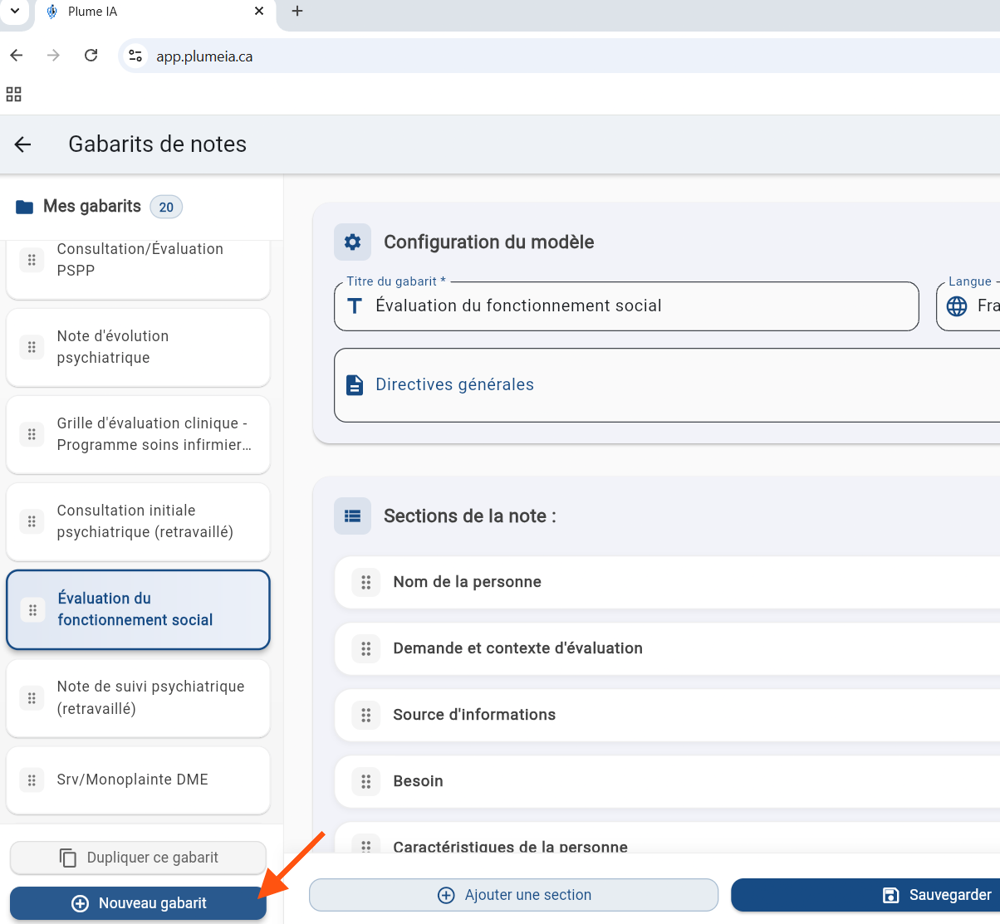
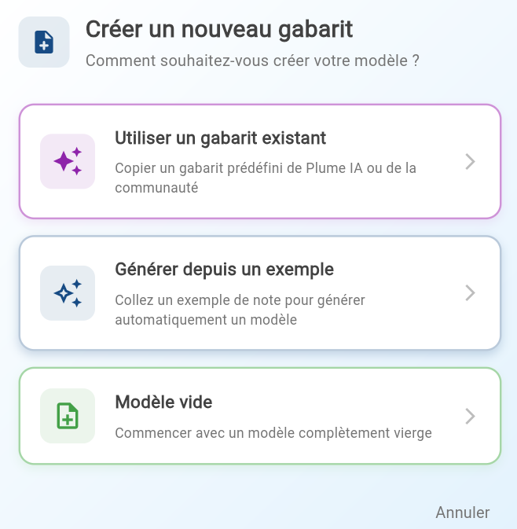
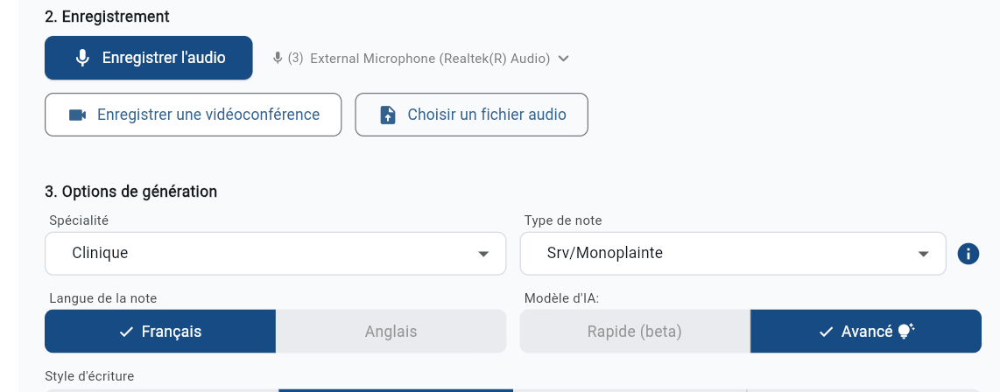

Créer un gabarit

Depuis la page Gabarits de notes, cliquez sur en bas à gauche pour démarrer.

Les 3 façons de créer un gabarit
1.
Utiliser un gabarit existant
Parcourez les gabarits de la communauté Plume IA et importez celui qui ressemble le plus à votre pratique. Modifiez-le ensuite à votre guise.
2.
Générer depuis un exemple
Collez une note exemple que vous avez déjà rédigée. Plume analyse la structure et génère automatiquement un gabarit correspondant.
3.
Partir d'un modèle vide
Construisez votre gabarit de zéro, section par section. Idéal si vous souhaitez une structure entièrement sur mesure.
Conseil : L'option Générer depuis un exemple est particulièrement utile si vous avez déjà une note type que vous aimez. Plume IA s'en inspire pour créer la structure automatiquement.
Utiliser votre gabarit
Une fois créé, votre gabarit est accessible sur la page de génération de notes. Sélectionnez dans Spécialité, Mes gabarits, puis dans le menu Type de note, choisissez votre gabarit personnalisé voulu.
